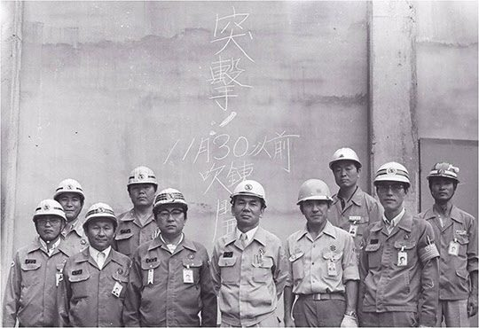
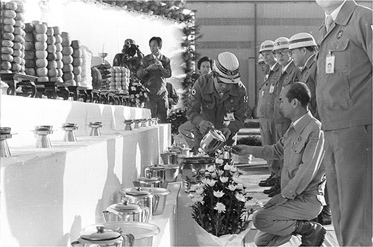
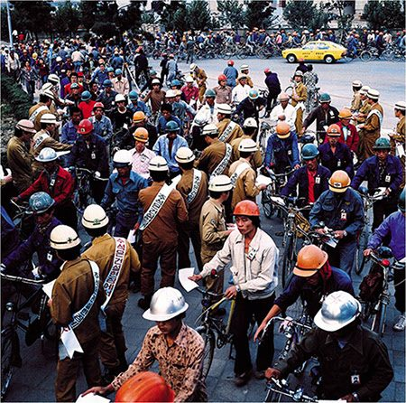
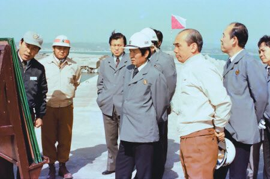

연재일 2015-03-26출처 조선일보 프리미엄조선 연재
박태준이 포철 3기 공기단축을 위한 ‘건설비상’을 선포하고 종합 카운트다운 체제에 돌입하여 영일만에 다시 전투 같은 날들이 이어지는 1978년 6월 중순, 포스코는 ‘제2제철소 1기 설비 사업계획서’를 상공부에 제출했다. 그리고 8월에는 현대가 ‘제2제철소 1기 건설 사업계획서’를 상공부에 제출했다.
이제 제2제철소 쟁탈전이 막이 오른 무대 위의 실전으로 전개될 시간이었다. 그 지점을 기준으로 삼는 경우, 한국 관료사회의 관행상 대통령이 직접 손대지 않는 한 ‘계획서’보다는 배후의 ‘끗발’이 더 큰 힘을 발휘하기 마련이었다.
그즈음에 제2제철소 입지 후보지로는 두 곳이 거론되었다. 현대가 제시한 경북 영해, 건설부가 찍어둔 충남 아산. 정부가 포스코에 의견을 물어오자 포스코는 두 곳 중 아산을 추천한다. 그러나 제2제철소 입지 선정 문제는 졸지에 박정희 대통령이 세상을 떠나고 이태쯤 더 지난 1981년 11월에 가서야 최종적으로 결정이 난다.

박태준은 정주영의 현대를 향한 신경이 좀 더 예민해진 상황에서 외국 설비공급사 감독들로부터 ‘포철 3기 설비의 11월 말 완공 불가’라는 건의를 받았다. 이유는 셋이었다. 한국 건설업체의 시공능력 부족, 국산화 설비의 납기 지연, 하자 발생에 의한 재시공 현장 증가. 그러나 그는 물러서지 않았다. 아니, 물러설 수 없었다. ‘공기 5개월 단축’이란 목표를 위태롭게 하는 ‘기술부족’을 한국인의 다른 장점으로 보충하겠다고 판단했다.
9월 17일 추석. 박태준은 솔선수범으로 차례 모시기와 연휴를 포기했다. ‘추석연휴 반납운동’이 회사 살리기 캠페인처럼 영일만 모든 현장에서 전개되었다. 2만여 건설역군들에게도 ‘성묘 미루기’나 ‘성묘 후 빨리 돌아오기’란 말이 회자되었다. 이 운동에 동참할 것을 호소하며 ‘포항종합제철주식회사’의 이름으로 찍어낸 유인물에는 <번영 위해 바친 추석, 조상인들 탓할쏘냐>란 구호가 찍혀 있었다.
추석을 맞아 고향에 가지 못한 일꾼들을 위해 박태준은 묘안을 냈다. 한국에서 제일 큰 차례 상을 회사 정문에 차리는 것. ‘자원은 유한, 창의는 무한’이란 슬로건이 걸린 정문 밑에 기다란 상을 놓고 흰 종이로 덮었다. 제수는 포항 죽도시장에서 최고품으로 마련했다. 합동 차례 상 앞에 꿇어앉아 제일 먼저 술잔을 올린 이는 포철 사장이었다.

추석연휴를 반납하거나 줄이자는 캠페인은 큰 성과를 거두었다. 추석 당일에도 38%의 건설역군들이 현장을 지켰다. 사흘 만에 67%, 닷새 만에 100% 출근율을 기록했다. 현장 사람들 스스로가 그 소식에 놀랐다. 그것은 고스란히 공기단축의 새로운 에너지로 충전되었다.
영일만 현장이 완전히 활력을 되찾은 가을 초입, 포스코와 현대의 제2제철소 쟁탈전은 승패의 고비를 맞았다. 그러나 박태준은 박정희와 독대할 길이 막혀 있었다. 정치와 절연하고 포철에 몰두하는 동안 어느새 대통령과 만날 기회가 대통령의 뜻에만 맡겨진 격이었다. 1961년부터 1973년까지 수시로 이뤄졌던 숱한 독대들에 비춰볼 경우에는 그가 격세지감에다 고립감마저 느낄 만한 일이었다.
1977년 9월 7일에 포철을 다년간 박정희는 1978년도 벌써 10월에 접어들건만 그 동안은 한 번도 포철을 방문하지 않았는데, 더구나 그해는 정초부터 대통령 비서실이 줄기차게 현대를 밀고 있었다. 그렇다고 대통령이 포철을 방문할 3기 종합준공식(그해 12월) 때까지 마냥 기다릴 수도 없는 노릇이었다. 그날이 오기 전에 ‘제2제철소 쟁탈전’은 결말을 보게 돼 있는 것이다.
그러한 상황에서 우선 박태준은 내각으로 눈을 돌렸다. 소통의 선은 주무장관인 최각규 상공부 장관이었다. 제2제철소 실수요자 선정에 국내의 비상한 관심이 쏠린 때, 마침 최각규는 부산까지 출장을 내려왔다가 포철이 3기 종합준공식을 준비하고 있는 영일만으로 ‘사전 점검’의 발길을 돌렸다.

포스코 영빈관에서 박태준과 최각규는 밤늦도록 깊은 대화를 나누었다. 상공부 장관의 궁금증과 의구심을 차근차근 풀어주는 포철 사장의 말씨와 표정은 처음부터 끝까지 진지하고 확신에 차 있었다. 세계 철강업계에서 한국의 입장, 한국 철강업계의 장래, 성장하고 있는 동남아시장 공략에 대한 전략과 전망, 포스코가 비축한 노하우, 자금조달 능력, 해외연수를 다녀왔거나 나가 있는 기술인력의 실태…. 특히 박태준의 견해는 제2제철소를 설계하고 건설하는 주체를 밝히는 대목에서 더욱 힘이 붙었다.
“우리는 포항 3기 공사에서 22.5%까지 끌어올린 장비와 기자재의 국산화율을 제2제철소에선 50∼60% 수준으로 끌어올릴 계획입니다. 고도의 기술이 들어가는 장비만 수입할 것입니다. 그러나 가장 중요한 것은 제2제철소를 포철의 힘으로 짓겠다는 것입니다. 레이아웃, 기본계획서, 전체 설계도, 건설, 조업 등 모든 것을 포철이 직접 할 것입니다. 지금의 포항 3기 공사도 대부분 우리 기술자들이 맡아서 하고 있습니다. 올해 11월 말에 3기가 완공되면 일본기술단도 우리 회사에서 완전히 떠나게 되어 있습니다.”
최각규는 껄끄러운 질문을 피하지 않았다.
“현대는 제철소 건설에는 물론이고 철도, 항만, 용수 등 모든 인프라도 정부의 지원을 받지 않고 자체적으로 해결하겠다고 하니, 제2제철소에 대한 정부의 재정지원에 부담을 느끼는 경제부처 일각에서도 현대를 지지하는 분위기가 있습니다. 청와대 비서실만 현대를 미는 게 아닌 거지요.”
박태준은 명쾌히 반격했다.
“우리나라 기업들, 특히 대기업들 중에 정부의 지원을 안 받은 기업이 있습니까? 이미 정부의 온갖 특혜를 받으며 성장해온 대기업이 이제 와서 인프라 사업 몇 개를 자체적으로 해결한다고 해서 그게 정부 지원은 없는 거라고 하면 어떻게 되는 겁니까?”
“정곡을 찌르는 반론이군요.”
아침에 포항을 떠나는 손님의 마음은 편안했다. 오래 고민해온 숙제를 간밤에 해결했던 것이다. 최각규는 진심으로 박태준의 포철을 지지하게 된다.

2014년 2월 13일 최각규는《포스코신문》과 인터뷰를 했다. 그의 회고는 박태준의 회고와 일치하는 것이었다.
“내가 포항에서 박태준 사장을 만났을 당시는 제2제철 건설 실수요자 논쟁이 뜨겁게 달아오르고 있을 때였어요. 포항제철과 현대가 치열한 공방전을 벌이고 있었죠. 박태준 사장은 포항제철의 장래, 한국 경제에서 포항제철이 차지하는 위치, 세계 시장에서 포항제철이 나아가야 할 길 등에 대해 매우 구체적으로 조목조목 설명했어요.
포항제철이 국제경쟁력을 확보하려면 아직 갈 길이 먼데 제2제철을 민간에서 건설하게 되면 제 살 깎아 먹기가 된다는 점, 포스코가 국제 규모를 달성하면 그때 가서 민간의 참여를 고려해도 늦지 않다는 점, 그리고 철강업이란 기본적으로 기업 간 경쟁이 아닌 국가 간 경쟁이란 점을 강조하더군요. 나는 그때 박 사장의 말에 크게 공감했습니다.”
이후 최 전 부총리는 경제장관 간담회에서 포항제철의 입장을 적극 대변했다. 그러나 당시 정부나 청와대 분위기는 현대 쪽으로 기울어져 있었다. 현대는 제철소를 건설함에 있어서 정부 돈은 단 한 푼도 안 쓰게하겠다며 공세를 폈다. 철도·항만·용수 등 모든 인프라도 정부의 지원을 받지 않고 자체적으로 해결하겠다는 것이었다. 따라서 정부의 재정지원에 부담을 느끼고 있던 일부 경제부처에서 현대 쪽을 지지하는 분위기가 완연했다.
“상공부는 주무부처로서 포항제철을 적극 지지했어요. 주무부처 장관이라고 해서 마음대로 할 수 있는 것은 아니지만 아무래도 다른 부처보다는 주장에 무게가 실렸겠지요. 그때 박태준 사장이 한 말이 생각나더군. 우리나라 기업치고 정부 지원을 안 받은 기업이 있느냐는 거였어요.
이미 정부의 온갖 특혜로 성장해온 기업이 이제 와서 인프라 사업 몇 개를 자체적으로 해결한다고 해서 그게 정부 지원이 없는 거냐, 이런 주장이었어요. 당시 상황으로 봐선 정곡을 찌른 지적이었지. 나 또한 그런 논리까지 동원하여 다른 부처들을 설득한 결과 분위기가 포항제철로 반전되었습니다.”
최각규 상공부 장관의 설득이 큰 도움이 되어서 정부 부처의 분위기는 포항제철을 지지하는 쪽으로 반전되었다고 하지만, 그가 회고한 그대로 “주무부처 장관이라고 해서 마음대로 할 수 있는 것”은 결코 아니었다. 현대냐 포철이냐, 정주영이냐 박태준이냐. 제2제철소 실수요자 선정은 결국 박정희의 뜻에 달려 있었다.